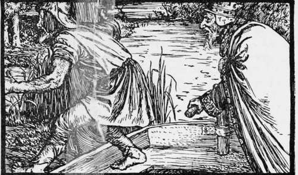

Giant Golden-Beard
Description
This section is from the book "Household Tales by Brothers Grimm", by Brothers Grimm. Also available from Amazon: Household Tales by Brothers Grimm.
Giant Golden-Beard
In a country village, over the hills and far away, lived a poor man, who had an only son born to him. Now this child was born under a lucky star, and was therefore what the people of that country call a Luck's-child; and those who told his fortune said, that in his fourteenth year he would marry no less a lady than the king's own daughter.
It so happened that the king of that land, soon after the child's birth, passed through the village in disguise, and stopping at the blacksmith's shop, asked what news was stirring. " Great news ! " said the people. "Master Brock, down that lane, has just had a child born to him that they say is a Luck's-child; and we are told that, when he is fourteen years old, he is fated to marry our noble king's daughter." This did not please the king; so he went to the poor child's parents, and asked them whether they would sell him their son ? " No," said they. But the stranger begged very hard, and said he would give a great deal of money : so as they had scarcely bread to eat, they at last agreed, saying to themselves, "He is a Luck's-child; all, therefore, is no doubt for the best— he can come to no harm."
The king took the child, put it into a box, and rode away; but when he came to a deep stream he threw it into the current, and said to himsjlf, "That young gentleman will never be my daughter's husband." The box, however, floated down the stream. Some kind fairy watched over it, so that no water reached the child; and at last, about two miles from the king's chief city, it stopped at the dam of a mill. The miller soon saw it, and took a long pole and drew it towards the shore, and finding it heavy, thought there was gold inside; but when he opened it he found a pretty little boy that smiled upon him merrily. Now the miller and his wife had no children, and they therefore rejoiced to see their prize, saying, "Heaven has sent it to us"; so they treated it very kindly, and brought it up with such care that everyone liked and loved it.
About thirteen years passed over their heads, when the same king came by chance to the mill, and seeing the boy, asked the miller if that was his son. "No," said he, " I found him, when a babe, floating down the river in a box into the mill-dam." "How long ago?" asked the king. "Some thirteen years," said the miller. "He is a fine fellow," said the king; "can you spare him to carry a letter to the queen? It will please me very much, and I will give him two pieces of gold for his trouble." " As your majesty pleases," said the miller.
Now the king had guessed at once that this must be the child he had tried to drown, so he wrote a letter by him to the queen, saying, " As soon as the bearer of this reaches you, let him be killed and buried, so that all may be over before I come back."
The young man set out with this letter but missed his way, and came in the evening to a dark wood. Through the gloom he saw a light afar off, to which he bent his steps, and found that it came from a little cottage. There was no one within except an old woman, who was frightened at seeing him, and said, " Why do you come hither, and whither are you going?" " I am going to the queen, to whom I was to have given a letter; but I have lost my way, and shall be glad if you will give me a night's rest." "You are very unlucky," said she, "for this is a robbers' hut; and if the band come back while you are here it may be worse for you." "I am so tired, however," replied he, "that I must take my chance, for I can go no further"; so he laid the letter on the table, stretched himself out upon a bench, and fell asleep.
When the robbers came home and saw him, they asked the old woman who the strange lad was. " I have given him shelter for charity," said she; " he had a letter to carry to the queen, and lost his way." The robbers took up the letter, broke it open, and read the orders which were in it to murder the bearer. Then their leader was very angry at the king's trick; so he tore his letter, and wrote a fresh one, begging the queen, as soon as the young man reached her, to marry him to the princess. Meantime they let him sleep on till morning broke, and then showed him the right way to the queen's palace ; where, as soon as she had read the letter, she made all ready for the wedding: and as the young man was very handsome, the princess was very dutiful, and took him then and there for a husband.
After a while the king came back; and when he saw that this Luck's-child was married to the princess, notwithstanding all the art and cunning he had used to thwart his luck, he asked eagerly how all this had happened, and what were the orders which he had given. "Dear husband," said the queen, "here is your own letter— read it for yourself." The king took it, and seeing that an exchange had been made, asked his son-in-law what he had done with the letter he gave him to carry. "I know nothing of it," said he; "if it is not the one you gave me, it must have been taken away in the night, when I slept." Then the king was very wroth, and said, "No man shall have my daughter who does not go down into the wonderful cave and bring me three golden hairs from the beard of the giant king who reigns there; do this, and you shall have my free leave to be my daughter's husband." "I will soon do that," said the youth; so he took leave of his wife, and set out on his journey.
At the first city that he came to, the guard at the gate stopped him, and asked what trade he followed, and what he knew. " I know everything," said he. " If that be so," said they, " you are just the man we want; be so good as to find out why our fountain in the market-place is dry, and will give no water. Tell us the cause of that, and we will give you two asses loaded with gold." " With all my heart," said he, "when I come back."
Then he journeyed on, and came to another city, and there the guard also asked him what trade he followed, and what he understood. " I know everything," answered he. " Then pray do us a good turn," said they ; " tell us why a tree, which always before bore us golden apples, does not even bear a leaf this year." "Most willingly," said he, " as I come back."
Continue to:
Tags
fairy tales, children's stories, brothers grimm, household tales